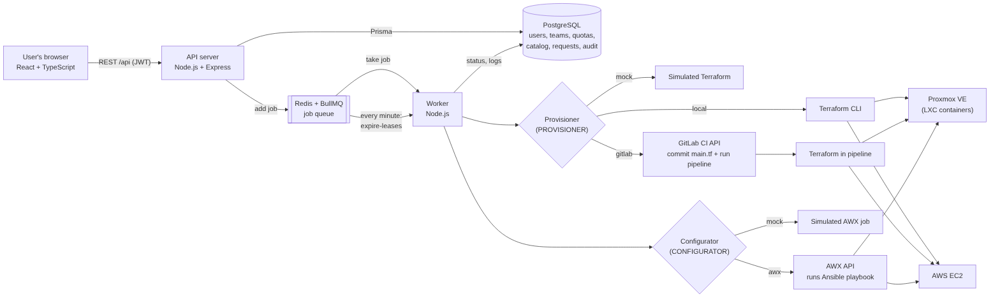
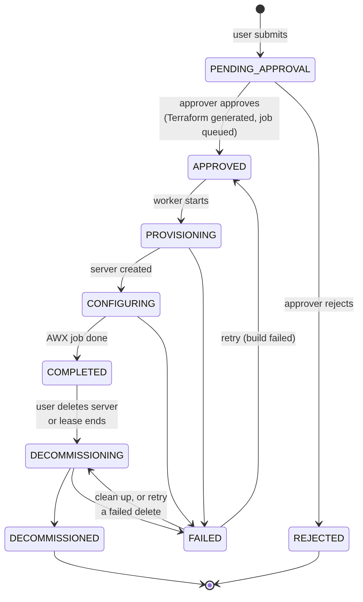
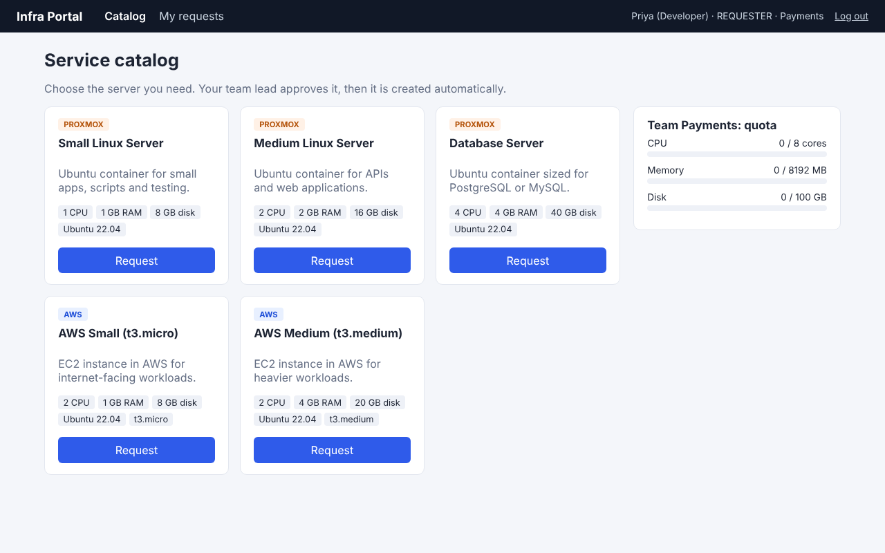
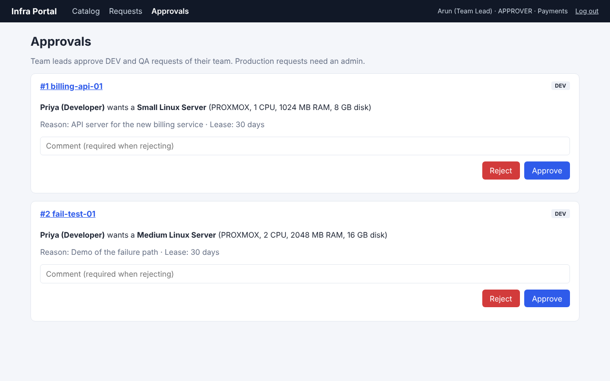
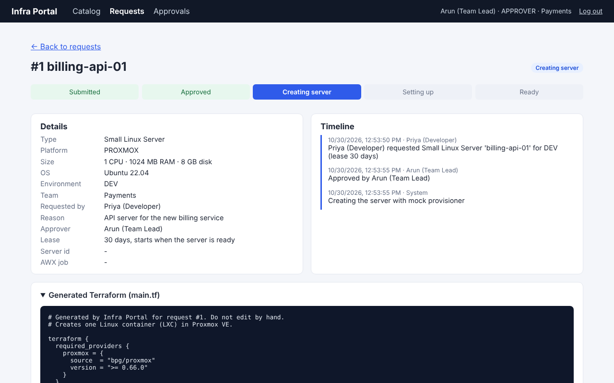
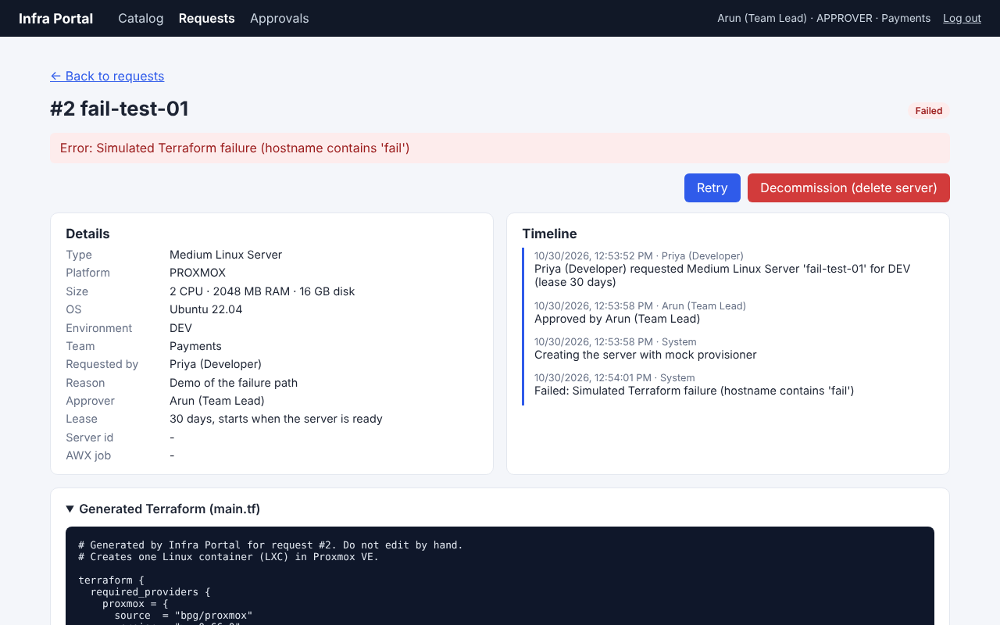

A self-service portal for requesting servers on Proxmox VE and AWS
Muthu · October 2026 · github.com/Muthujar/infra-portal
Goal: a catalog, an approval step and automation, in the spirit of VMware vRealize Automation (Aria).
Picks a server from the catalog, names it, chooses DEV / QA / PROD and a lease.
Validates input, checks the team quota and saves the request with an audit entry.
Approves DEV/QA for the team. PROD needs an admin. Terraform code is generated.
Runs Terraform, then the AWX (Ansible) job. The UI shows every status live.
Every change is recorded in the audit log. Servers with a lease are deleted automatically when it ends.

React UI · Node.js + Express API · PostgreSQL (Prisma) · Redis + BullMQ queue · worker with pluggable provisioner (mock / local Terraform / GitLab CI) and configurator (mock / AWX)





Requester, approver, admin. Nobody approves their own request. PROD needs an admin. Requesters see only their own requests.
CPU, RAM and disk limits per team, checked on request, on approval and on retry. Admins edit them.
Every action with actor, time and status change. Visible on each request and in full to admins.
7, 30 or 90 days or no expiry. The worker deletes expired servers every minute; owners can extend.
Proxmox and AWS credentials go to Terraform as environment variables, never into main.tf or the database.
Every input is checked with Zod: hostname format, unique names, sizes, comments.
| Part | Status | Switch |
|---|---|---|
| UI, API, database, RBAC, quotas, approvals, leases, audit, queue, worker | Real | always on |
| Terraform generation (Proxmox LXC, AWS EC2) | Real | validated in CI |
| Creating containers in Proxmox VE | Real | PROVISIONER=local |
| AWS EC2 apply | Validate only | AWS_APPLY_ENABLED=true |
| GitLab CI pipeline | Mock in demo | PROVISIONER=gitlab |
| AWX / Ansible job | Mock in demo | CONFIGURATOR=awx |
| SAML / LDAP login | Not built | next step: Keycloak |
Setup and demo: README.md · docs/setup-windows-proxmox.md · docs/demo.md · docs/architecture.md